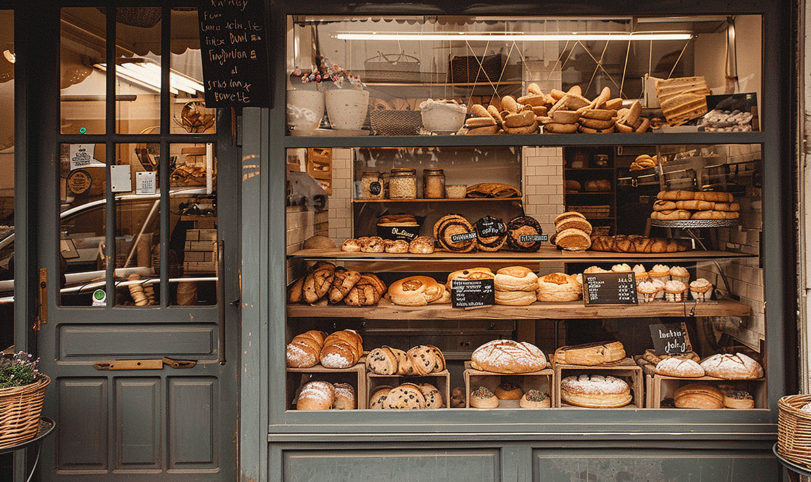

Chef Jack
Founder · Since 2014
Here at North Star Bakery we use simple ingredients, local grains, and time.

Since 2014
Stop by and taste the difference.
Or place a preorder and we'll have something fresh waiting for you.
Meet the team
Founder · Since 2014
Team lead · Since 2016
Customer care · Since 2018
A note from us